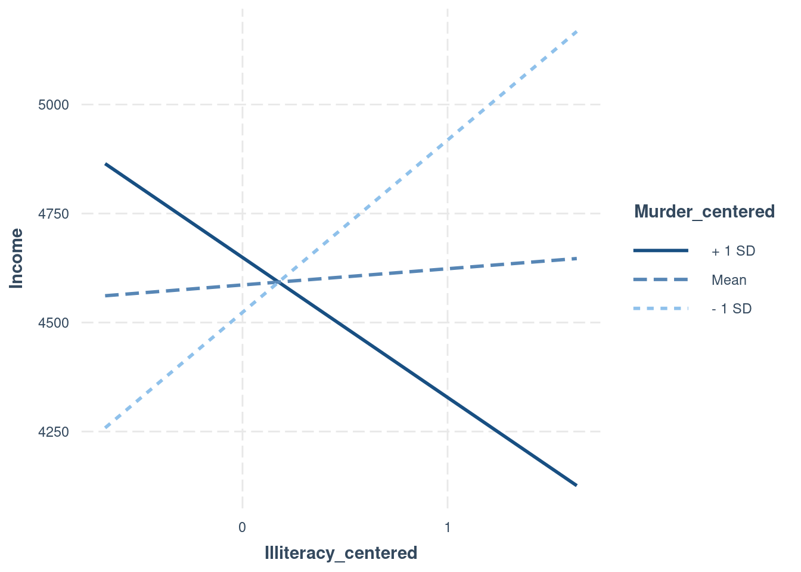
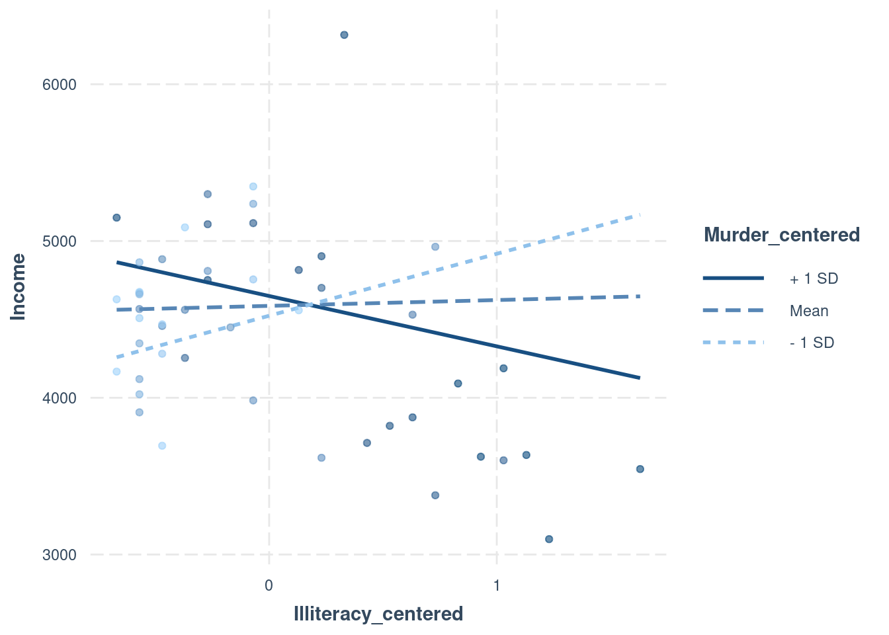

Regression
1 Preamble
1.1 Install Libraries
#install.packages("remotes")
#remotes::install_github("DevPsyLab/petersenlab")1.2 Load Libraries
library("petersenlab")
library("MASS")
library("tidyverse")
library("psych")
library("rms")
library("robustbase")
library("brms")
library("cvTools")
library("car")
library("mgcv")
library("AER")
library("foreign")
library("olsrr")
library("quantreg")
library("mblm")
library("effects")
library("correlation")
library("interactions")
library("lavaan")
library("regtools")
library("mice")2 Import Data
mydata <- read.csv("https://osf.io/8syp5/download")Warning in file(file, "rt"): URL 'https://osf.io/8syp5/download': status was
'SSL connect error'Error in file(file, "rt"): cannot open the connection to 'https://osf.io/8syp5/download'3 Data Preparation
mydata$countVariable <- as.integer(mydata$bpi_antisocialT2Sum)Error in eval(expr, envir, enclos): object 'mydata' not foundmydata$orderedVariable <- factor(mydata$countVariable, ordered = TRUE)Error in eval(expr, envir, enclos): object 'mydata' not foundmydata$female <- NAError: object 'mydata' not foundmydata$female[which(mydata$sex == "male")] <- 0Error: object 'mydata' not foundmydata$female[which(mydata$sex == "female")] <- 1Error: object 'mydata' not found4 Linear Regression
4.1 Linear regression model
multipleRegressionModel <- lm(bpi_antisocialT2Sum ~ bpi_antisocialT1Sum + bpi_anxiousDepressedSum,
data = mydata,
na.action = na.exclude)Error in eval(mf, parent.frame()): object 'mydata' not foundsummary(multipleRegressionModel)Error in h(simpleError(msg, call)): error in evaluating the argument 'object' in selecting a method for function 'summary': object 'multipleRegressionModel' not foundconfint(multipleRegressionModel)Error in eval(expr, envir, enclos): object 'multipleRegressionModel' not found4.1.1 Remove missing data
multipleRegressionModelNoMissing <- lm(bpi_antisocialT2Sum ~ bpi_antisocialT1Sum + bpi_anxiousDepressedSum,
data = mydata,
na.action = na.omit)Error in eval(mf, parent.frame()): object 'mydata' not foundmultipleRegressionModelNoMissing <- lm(bpi_antisocialT2Sum ~ bpi_antisocialT1Sum + bpi_anxiousDepressedSum,
data = mydata %>% select(bpi_antisocialT2Sum, bpi_antisocialT1Sum, bpi_anxiousDepressedSum) %>% na.omit)Error in eval(mf, parent.frame()): object 'mydata' not found4.2 Linear regression model on correlation/covariance matrix (for pairwise deletion)
multipleRegressionModelPairwise <- setCor(
y = "bpi_antisocialT2Sum",
x = c("bpi_antisocialT1Sum","bpi_anxiousDepressedSum"),
data = cov(mydata[,c("bpi_antisocialT2Sum","bpi_antisocialT1Sum","bpi_anxiousDepressedSum")], use = "pairwise.complete.obs"),
n.obs = nrow(mydata))Error in eval(expr, envir, enclos): object 'mydata' not foundsummary(multipleRegressionModelPairwise)Error in h(simpleError(msg, call)): error in evaluating the argument 'object' in selecting a method for function 'summary': object 'multipleRegressionModelPairwise' not foundmultipleRegressionModelPairwise[c("coefficients","se","Probability","R2","shrunkenR2")]Error in eval(expr, envir, enclos): object 'multipleRegressionModelPairwise' not found4.3 Linear regression model with robust covariance matrix (rms)
rmsMultipleRegressionModel <- robcov(ols(bpi_antisocialT2Sum ~ bpi_antisocialT1Sum + bpi_anxiousDepressedSum,
data = mydata,
x = TRUE,
y = TRUE))Error in eval(expr, envir, enclos): object 'mydata' not foundrmsMultipleRegressionModelError in eval(expr, envir, enclos): object 'rmsMultipleRegressionModel' not foundconfint(rmsMultipleRegressionModel)Error in eval(expr, envir, enclos): object 'rmsMultipleRegressionModel' not found4.4 Robust linear regression (MM-type iteratively reweighted least squares regression)
robustLinearRegression <- lmrob(bpi_antisocialT2Sum ~ bpi_antisocialT1Sum + bpi_anxiousDepressedSum,
data = mydata,
na.action = na.exclude)Error in eval(mf, parent.frame()): object 'mydata' not foundsummary(robustLinearRegression)Error in h(simpleError(msg, call)): error in evaluating the argument 'object' in selecting a method for function 'summary': object 'robustLinearRegression' not foundconfint(robustLinearRegression)Error in eval(expr, envir, enclos): object 'robustLinearRegression' not found4.5 Least trimmed squares regression (for removing outliers)
ltsRegression <- ltsReg(bpi_antisocialT2Sum ~ bpi_antisocialT1Sum + bpi_anxiousDepressedSum,
data = mydata,
na.action = na.exclude)Error in eval(expr, p): object 'mydata' not foundsummary(ltsRegression)Error in h(simpleError(msg, call)): error in evaluating the argument 'object' in selecting a method for function 'summary': object 'ltsRegression' not found4.6 Bayesian linear regression
bayesianRegularizedRegression <- brm(bpi_antisocialT2Sum ~ bpi_antisocialT1Sum + bpi_anxiousDepressedSum,
data = mydata,
chains = 4,
iter = 2000,
seed = 52242)Error in eval(expr, envir, enclos): object 'mydata' not foundsummary(bayesianRegularizedRegression)Error in h(simpleError(msg, call)): error in evaluating the argument 'object' in selecting a method for function 'summary': object 'bayesianRegularizedRegression' not found5 Generalized Linear Regression
5.1 Generalized regression model
In this example, we predict a count variable that has a poisson distribution. We could change the distribution.
generalizedRegressionModel <- glm(countVariable ~ bpi_antisocialT1Sum + bpi_anxiousDepressedSum,
data = mydata,
family = "poisson",
na.action = na.exclude)Error in eval(mf, parent.frame()): object 'mydata' not foundsummary(generalizedRegressionModel)Error in h(simpleError(msg, call)): error in evaluating the argument 'object' in selecting a method for function 'summary': object 'generalizedRegressionModel' not foundconfint(generalizedRegressionModel)Error in eval(expr, envir, enclos): object 'generalizedRegressionModel' not found5.2 Generalized regression model (rms)
In this example, we predict a count variable that has a poisson distribution. We could change the distribution.
rmsGeneralizedRegressionModel <- Glm(countVariable ~ bpi_antisocialT1Sum + bpi_anxiousDepressedSum,
data = mydata,
x = TRUE,
y = TRUE,
family = "poisson")Error in eval(expr, envir, enclos): object 'mydata' not foundrmsGeneralizedRegressionModelError in eval(expr, envir, enclos): object 'rmsGeneralizedRegressionModel' not foundconfint(rmsGeneralizedRegressionModel)Error in eval(expr, envir, enclos): object 'rmsGeneralizedRegressionModel' not found5.3 Bayesian generalized linear model
In this example, we predict a count variable that has a poisson
distribution. We could change the distribution. For example, we could
use Gamma regression, family = Gamma, when the response
variable is continuous and positive, and the coefficient of
variation–rather than the variance–is constant.
bayesianGeneralizedLinearRegression <- brm(countVariable ~ bpi_antisocialT1Sum + bpi_anxiousDepressedSum,
data = mydata,
family = poisson,
chains = 4,
seed = 52242,
iter = 2000)Error in eval(expr, envir, enclos): object 'mydata' not foundsummary(bayesianGeneralizedLinearRegression)Error in h(simpleError(msg, call)): error in evaluating the argument 'object' in selecting a method for function 'summary': object 'bayesianGeneralizedLinearRegression' not found5.4 Robust generalized regression
robustGeneralizedRegression <- glmrob(countVariable ~ bpi_antisocialT1Sum + bpi_anxiousDepressedSum,
data = mydata,
family = "poisson",
na.action = na.exclude)Error in eval(mf, parent.frame()): object 'mydata' not foundsummary(robustGeneralizedRegression)Error in h(simpleError(msg, call)): error in evaluating the argument 'object' in selecting a method for function 'summary': object 'robustGeneralizedRegression' not foundconfint(robustGeneralizedRegression)Error in eval(expr, envir, enclos): object 'robustGeneralizedRegression' not found5.5 Ordinal regression model
ordinalRegressionModel1 <- polr(
orderedVariable ~ bpi_antisocialT1Sum + bpi_anxiousDepressedSum,
data = mydata)Error in eval(expr, p): object 'mydata' not foundordinalRegressionModel2 <- lrm(
orderedVariable ~ bpi_antisocialT1Sum + bpi_anxiousDepressedSum,
data = mydata,
x = TRUE,
y = TRUE)Error in eval(expr, envir, enclos): object 'mydata' not foundordinalRegressionModel3 <- orm(
orderedVariable ~ bpi_antisocialT1Sum + bpi_anxiousDepressedSum,
data = mydata,
x = TRUE,
y = TRUE)Error in eval(expr, envir, enclos): object 'mydata' not foundsummary(ordinalRegressionModel1)Error in h(simpleError(msg, call)): error in evaluating the argument 'object' in selecting a method for function 'summary': object 'ordinalRegressionModel1' not foundconfint(ordinalRegressionModel1)Error in eval(expr, envir, enclos): object 'ordinalRegressionModel1' not foundordinalRegressionModel2Error in eval(expr, envir, enclos): object 'ordinalRegressionModel2' not foundordinalRegressionModel3Error in eval(expr, envir, enclos): object 'ordinalRegressionModel3' not foundconfint(ordinalRegressionModel3)Error in eval(expr, envir, enclos): object 'ordinalRegressionModel3' not found5.6 Bayesian ordinal regression model
bayesianOrdinalRegression <- brm(orderedVariable ~ bpi_antisocialT1Sum + bpi_anxiousDepressedSum,
data = mydata,
family = cumulative(),
chains = 4,
seed = 52242,
iter = 2000)Error in eval(expr, envir, enclos): object 'mydata' not foundsummary(bayesianOrdinalRegression)Error in h(simpleError(msg, call)): error in evaluating the argument 'object' in selecting a method for function 'summary': object 'bayesianOrdinalRegression' not found5.7 Bayesian count regression model
bayesianCountRegression <- brm(countVariable ~ bpi_antisocialT1Sum + bpi_anxiousDepressedSum,
data = mydata,
family = "poisson",
chains = 4,
seed = 52242,
iter = 2000)Error in eval(expr, envir, enclos): object 'mydata' not foundsummary(bayesianCountRegression)Error in h(simpleError(msg, call)): error in evaluating the argument 'object' in selecting a method for function 'summary': object 'bayesianCountRegression' not found5.8 Logistic regression model (rms)
logisticRegressionModel <- robcov(lrm(female ~ bpi_antisocialT1Sum + bpi_anxiousDepressedSum,
data = mydata,
x = TRUE,
y = TRUE))Error in eval(expr, envir, enclos): object 'mydata' not foundlogisticRegressionModelError in eval(expr, envir, enclos): object 'logisticRegressionModel' not foundconfint(logisticRegressionModel)Error in eval(expr, envir, enclos): object 'logisticRegressionModel' not found5.9 Bayesian logistic regression model
bayesianLogisticRegression <- brm(female ~ bpi_antisocialT1Sum + bpi_anxiousDepressedSum,
data = mydata,
family = bernoulli,
chains = 4,
seed = 52242,
iter = 2000)Error in eval(expr, envir, enclos): object 'mydata' not foundsummary(bayesianLogisticRegression)Error in h(simpleError(msg, call)): error in evaluating the argument 'object' in selecting a method for function 'summary': object 'bayesianLogisticRegression' not found6 Hierarchical Linear Regression
model1 <- lm(bpi_antisocialT2Sum ~ bpi_antisocialT1Sum,
data = mydata %>% select(bpi_antisocialT2Sum, bpi_antisocialT1Sum, bpi_anxiousDepressedSum) %>% na.omit,
na.action = na.exclude)Error in eval(mf, parent.frame()): object 'mydata' not foundmodel2 <- lm(bpi_antisocialT2Sum ~ bpi_antisocialT1Sum + bpi_anxiousDepressedSum,
data = mydata %>% select(bpi_antisocialT2Sum, bpi_antisocialT1Sum, bpi_anxiousDepressedSum) %>% na.omit,
na.action = na.exclude)Error in eval(mf, parent.frame()): object 'mydata' not foundsummary(model2)$adj.r.squaredError in h(simpleError(msg, call)): error in evaluating the argument 'object' in selecting a method for function 'summary': object 'model2' not foundanova(model1, model2)Error in h(simpleError(msg, call)): error in evaluating the argument 'object' in selecting a method for function 'anova': object 'model1' not foundsummary(model2)$adj.r.squared - summary(model1)$adj.r.squaredError in h(simpleError(msg, call)): error in evaluating the argument 'object' in selecting a method for function 'summary': object 'model2' not found7 Moderated Multiple Regression
https://cran.r-project.org/web/packages/interactions/vignettes/interactions.html
states <- as.data.frame(state.x77)7.1 Mean Center Predictors
Make sure to mean-center or orthogonalize predictors before computing the interaction term.
states$Illiteracy_centered <- scale(states$Illiteracy, scale = FALSE)
states$Murder_centered <- scale(states$Murder, scale = FALSE)7.2 Model
interactionModel <- lm(
Income ~ Illiteracy_centered + Murder_centered + Illiteracy_centered:Murder_centered + `HS Grad`,
data = states)7.3 Plots
interact_plot(interactionModel, pred = Illiteracy_centered, modx = Murder_centered)
interact_plot(interactionModel, pred = Illiteracy_centered, modx = Murder_centered, plot.points = TRUE)
interact_plot(interactionModel, pred = Illiteracy_centered, modx = Murder_centered, interval = TRUE)
johnson_neyman(interactionModel, pred = Illiteracy_centered, modx = Murder_centered, alpha = .05)JOHNSON-NEYMAN INTERVAL
When Murder_centered is OUTSIDE the interval [-8.13, 4.37], the slope of
Illiteracy_centered is p < .05.
Note: The range of observed values of Murder_centered is [-5.98, 7.72]
7.4 Simple Slopes Analysis
sim_slopes(interactionModel, pred = Illiteracy_centered, modx = Murder_centered, johnson_neyman = FALSE)SIMPLE SLOPES ANALYSIS
Slope of Illiteracy_centered when Murder_centered = -3.69154e+00 (- 1 SD):
Est. S.E. t val. p
-------- -------- -------- ------
395.34 274.84 1.44 0.16
Slope of Illiteracy_centered when Murder_centered = -1.24345e-16 (Mean):
Est. S.E. t val. p
------- -------- -------- ------
37.12 192.56 0.19 0.85
Slope of Illiteracy_centered when Murder_centered = 3.69154e+00 (+ 1 SD):
Est. S.E. t val. p
--------- -------- -------- ------
-321.10 183.49 -1.75 0.09sim_slopes(interactionModel,
pred = Illiteracy_centered,
modx = Murder_centered,
modx.values = c(0, 5, 10),
johnson_neyman = FALSE)SIMPLE SLOPES ANALYSIS
Slope of Illiteracy_centered when Murder_centered = 0.00:
Est. S.E. t val. p
------- -------- -------- ------
37.12 192.56 0.19 0.85
Slope of Illiteracy_centered when Murder_centered = 5.00:
Est. S.E. t val. p
--------- -------- -------- ------
-448.07 202.17 -2.22 0.03
Slope of Illiteracy_centered when Murder_centered = 10.00:
Est. S.E. t val. p
--------- -------- -------- ------
-933.27 330.10 -2.83 0.017.5 Johnson-Neyman intervals
Indicates all the values of the moderator for which the slope of the predictor is statistically significant.
sim_slopes(interactionModel, pred = Illiteracy_centered, modx = Murder_centered, johnson_neyman = TRUE)JOHNSON-NEYMAN INTERVAL
When Murder_centered is OUTSIDE the interval [-8.13, 4.37], the slope of
Illiteracy_centered is p < .05.
Note: The range of observed values of Murder_centered is [-5.98, 7.72]
SIMPLE SLOPES ANALYSIS
Slope of Illiteracy_centered when Murder_centered = -3.69154e+00 (- 1 SD):
Est. S.E. t val. p
-------- -------- -------- ------
395.34 274.84 1.44 0.16
Slope of Illiteracy_centered when Murder_centered = -1.24345e-16 (Mean):
Est. S.E. t val. p
------- -------- -------- ------
37.12 192.56 0.19 0.85
Slope of Illiteracy_centered when Murder_centered = 3.69154e+00 (+ 1 SD):
Est. S.E. t val. p
--------- -------- -------- ------
-321.10 183.49 -1.75 0.09probe_interaction(interactionModel,
pred = Illiteracy_centered,
modx = Murder_centered,
cond.int = TRUE,
interval = TRUE,
jnplot = TRUE)JOHNSON-NEYMAN INTERVAL
When Murder_centered is OUTSIDE the interval [-8.13, 4.37], the slope of
Illiteracy_centered is p < .05.
Note: The range of observed values of Murder_centered is [-5.98, 7.72]SIMPLE SLOPES ANALYSIS
When Murder_centered = -3.69154e+00 (- 1 SD):
Est. S.E. t val. p
---------------------------------- --------- -------- -------- ------
Slope of Illiteracy_centered 395.34 274.84 1.44 0.16
Conditional intercept 4523.23 134.99 33.51 0.00
When Murder_centered = -1.24345e-16 (Mean):
Est. S.E. t val. p
---------------------------------- --------- -------- -------- ------
Slope of Illiteracy_centered 37.12 192.56 0.19 0.85
Conditional intercept 4586.22 85.52 53.63 0.00
When Murder_centered = 3.69154e+00 (+ 1 SD):
Est. S.E. t val. p
---------------------------------- --------- -------- -------- ------
Slope of Illiteracy_centered -321.10 183.49 -1.75 0.09
Conditional intercept 4649.22 118.97 39.08 0.008 Approaches to Handling Missingness
8.1 Listwise deletion
Listwise deletion deletes every row in the data file that has a missing value for one of the model variables.
listwiseDeletionModel <- lm(
bpi_antisocialT2Sum ~ bpi_antisocialT1Sum + bpi_anxiousDepressedSum,
data = mydata,
na.action = na.exclude)Error in eval(mf, parent.frame()): object 'mydata' not foundsummary(listwiseDeletionModel)Error in h(simpleError(msg, call)): error in evaluating the argument 'object' in selecting a method for function 'summary': object 'listwiseDeletionModel' not foundconfint(listwiseDeletionModel)Error in eval(expr, envir, enclos): object 'listwiseDeletionModel' not found8.2 Pairwise deletion
Also see here:
- https://stats.stackexchange.com/questions/158366/fit-multiple-regression-model-with-pairwise-deletion-or-on-a-correlation-covari/173002#173002
- https://stats.stackexchange.com/questions/299792/r-lm-covariance-matrix-manual-calculation-failure
- https://stats.stackexchange.com/questions/107597/is-there-a-way-to-use-the-covariance-matrix-to-find-coefficients-for-multiple-re
- https://stats.stackexchange.com/questions/105006/how-to-perform-a-bivariate-regression-using-pairwise-deletion-of-missing-values
- https://dl.dropboxusercontent.com/s/4sf0et3p47ykctx/MissingPairwise.sps
Adapted from here: https://stefvanbuuren.name/fimd/sec-simplesolutions.html#sec:pairwise
modelData <- mydata[,c("bpi_antisocialT2Sum","bpi_antisocialT1Sum","bpi_anxiousDepressedSum")]Error in eval(expr, envir, enclos): object 'mydata' not foundvarMeans <- colMeans(modelData, na.rm = TRUE)Error in colMeans(modelData, na.rm = TRUE): 'x' must be an array of at least two dimensionsvarCovariances <- cov(modelData, use = "pairwise")Error in cov(modelData, use = "pairwise"): supply both 'x' and 'y' or a matrix-like 'x'pairwiseRegression_syntax <- '
bpi_antisocialT2Sum ~ bpi_antisocialT1Sum + bpi_anxiousDepressedSum
bpi_antisocialT2Sum ~~ bpi_antisocialT2Sum
bpi_antisocialT2Sum ~ 1
'
pairwiseRegression_fit <- lavaan(
pairwiseRegression_syntax,
sample.mean = varMeans,
sample.cov = varCovariances,
sample.nobs = sum(complete.cases(modelData))
)Error in eval(expr, envir, enclos): object 'varCovariances' not foundsummary(
pairwiseRegression_fit,
standardized = TRUE,
rsquare = TRUE)Error in h(simpleError(msg, call)): error in evaluating the argument 'object' in selecting a method for function 'summary': object 'pairwiseRegression_fit' not found8.3 Full-information maximum likelihood (FIML)
fimlRegression_syntax <- '
bpi_antisocialT2Sum ~ bpi_antisocialT1Sum + bpi_anxiousDepressedSum
bpi_antisocialT2Sum ~~ bpi_antisocialT2Sum
bpi_antisocialT2Sum ~ 1
'
fimlRegression_fit <- lavaan(
fimlRegression_syntax,
data = mydata,
missing = "ML",
)Error in eval(expr, envir, enclos): object 'mydata' not foundsummary(
fimlRegression_fit,
standardized = TRUE,
rsquare = TRUE)Error in h(simpleError(msg, call)): error in evaluating the argument 'object' in selecting a method for function 'summary': object 'fimlRegression_fit' not found8.4 Multiple imputation
modelData_imputed <- mice(
modelData,
m = 5,
method = "pmm") # predictive mean matching; can choose among many methodsError: Data should be a matrix or data frameimputedData_fit <- with(
modelData_imputed,
lm(bpi_antisocialT2Sum ~ bpi_antisocialT1Sum + bpi_anxiousDepressedSum))Error in eval(expr, envir, enclos): object 'modelData_imputed' not foundimputedData_pooledEstimates <- pool(imputedData_fit)Error in eval(expr, envir, enclos): object 'imputedData_fit' not foundsummary(imputedData_pooledEstimates)Error in h(simpleError(msg, call)): error in evaluating the argument 'object' in selecting a method for function 'summary': object 'imputedData_pooledEstimates' not found9 Model Building Steps
- Examine extent and type of missing data, consider how to handle missing values (multiple imputation, FIML, pairwise deletion, listwise deletion)
- Little’s MCAR test from
mcar_test()function of thenjtierney/naniarpackage - Bayesian handling of missing data: https://cran.r-project.org/web/packages/brms/vignettes/brms_missings.html
- Little’s MCAR test from
- Examine descriptive statistics, consider variable transformations
- Examine scatterplot matrix to examine whether associations between predictor and outcomes are linear or nonlinear
- Model building: theory and empiricism (stepwise regression, likelihood ratio tests, k-fold cross validation to check for over-fitting compared to simpler model)
- Test assumptions
- Examine whether predictors have linear association with outcome (Residual Plots, Marginal Model Plots, Added-Variable Plots—check for non-horizontal lines)
- Examine whether residuals have constant variance across levels of outcome and predictors Residual Plots, Spread-Level Plots—check for fan-shaped plot or other increasing/decreasing structure)
- Examine whether predictors show multicollinearity (VIF)
- Examine whether residuals are normally distributed (QQ plot and density plot)
- Examine influence of influential observations (high outlyingness and leverage) on parameter stimates by iteratively removing influential observations and refitting (Added-Variable Plots)
- Handle violated assumptions, select final set of predictors/outcomes and transformation of each
- Use k-fold cross validation to identify the best estimation procedure (OLS, MM, or LTS) on the final model
- Use identified estimation procedure to fit final model and determine the best parameter point estimates
- Calculate bootstrapped estimates to determine the confidence intervals around the parameter estimates of the final model
10 Bootstrapped Estimates
To determine the confidence intervals of parameter estimates
10.1 Linear Regression
multipleRegressionModelBootstrapped <- Boot(multipleRegressionModelNoMissing, R = 1000)Error in eval(expr, envir, enclos): object 'multipleRegressionModelNoMissing' not foundsummary(multipleRegressionModelBootstrapped)Error in h(simpleError(msg, call)): error in evaluating the argument 'object' in selecting a method for function 'summary': object 'multipleRegressionModelBootstrapped' not foundconfint(multipleRegressionModelBootstrapped, level = .95, type = "bca")Error in eval(expr, envir, enclos): object 'multipleRegressionModelBootstrapped' not foundhist(multipleRegressionModelBootstrapped)Error in eval(expr, envir, enclos): object 'multipleRegressionModelBootstrapped' not found10.2 Generalized Regression
generalizedRegressionModelBootstrapped <- Boot(multipleRegressionModelNoMissing, R = 1000)Error in eval(expr, envir, enclos): object 'multipleRegressionModelNoMissing' not foundsummary(generalizedRegressionModelBootstrapped)Error in h(simpleError(msg, call)): error in evaluating the argument 'object' in selecting a method for function 'summary': object 'generalizedRegressionModelBootstrapped' not foundconfint(generalizedRegressionModelBootstrapped, level = .95, type = "bca")Error in eval(expr, envir, enclos): object 'generalizedRegressionModelBootstrapped' not foundhist(generalizedRegressionModelBootstrapped)Error in eval(expr, envir, enclos): object 'generalizedRegressionModelBootstrapped' not found11 Cross Validation
To examine degree of prediction error and over-fitting to determine best model https://stats.stackexchange.com/questions/103459/how-do-i-know-which-method-of-cross-validation-is-best
11.1 K-fold cross validation
kFolds <- 10
replications <- 20
folds <- cvFolds(nrow(mydata), K = kFolds, R = replications)Error in eval(expr, envir, enclos): object 'mydata' not foundfitLm <- lm(bpi_antisocialT2Sum ~ bpi_antisocialT1Sum + bpi_anxiousDepressedSum,
data = mydata,
na.action = "na.exclude")Error in eval(mf, parent.frame()): object 'mydata' not foundfitLmrob <- lmrob(bpi_antisocialT2Sum ~ bpi_antisocialT1Sum + bpi_anxiousDepressedSum,
data = mydata,
na.action = "na.exclude")Error in eval(mf, parent.frame()): object 'mydata' not foundfitLts <- ltsReg(bpi_antisocialT2Sum ~ bpi_antisocialT1Sum + bpi_anxiousDepressedSum,
data = mydata,
na.action = "na.exclude")Error in eval(expr, p): object 'mydata' not foundcvFitLm <- cvLm(fitLm, K = kFolds, R = replications)Error in eval(expr, envir, enclos): object 'fitLm' not foundcvFitLmrob <- cvLmrob(fitLmrob, K = kFolds, R = replications)Error in eval(expr, envir, enclos): object 'fitLmrob' not foundcvFitLts <- cvLts(fitLts, K = kFolds, R = replications)Error in eval(expr, envir, enclos): object 'fitLts' not foundcvFits <- cvSelect(OLS = cvFitLm, MM = cvFitLmrob, LTS = cvFitLts)Error in eval(expr, envir, enclos): object 'cvFitLm' not foundcvFitsError in eval(expr, envir, enclos): object 'cvFits' not foundbwplot(cvFits, xlab = "Root Mean Square Error", xlim= c(0, max(cvFits$cv$CV) + 0.2))Error in eval(expr, envir, enclos): object 'cvFits' not found12 Examining Model Fits
12.1 Effect Plots
allEffects(multipleRegressionModel)Error in eval(expr, envir, enclos): object 'multipleRegressionModel' not foundplot(allEffects(multipleRegressionModel))Error in h(simpleError(msg, call)): error in evaluating the argument 'x' in selecting a method for function 'plot': object 'multipleRegressionModel' not found12.2 Confidence Ellipses
confidenceEllipse(multipleRegressionModel, levels = c(0.5, .95))Error in eval(expr, envir, enclos): object 'multipleRegressionModel' not found12.3 Data Ellipse
mydata_nomissing <- na.omit(mydata[,c("bpi_antisocialT1Sum","bpi_antisocialT2Sum")])Error in eval(expr, envir, enclos): object 'mydata' not founddataEllipse(mydata_nomissing$bpi_antisocialT1Sum, mydata_nomissing$bpi_antisocialT2Sum, levels = c(0.5, .95))Error in eval(expr, envir, enclos): object 'mydata_nomissing' not found13 Diagnostics
13.1 Assumptions
13.1.1 1. Linear relation between predictors and outcome
13.1.1.1 Ways to Test
13.1.1.1.1 Before Model Fitting
- scatterplot matrix
- distance correlation
13.1.1.1.1.1 Scatterplot Matrix
scatterplotMatrix(~ bpi_antisocialT2Sum + bpi_antisocialT1Sum + bpi_anxiousDepressedSum, data = mydata)Error in eval(m$data, sys.frame(sys.parent())): object 'mydata' not found13.1.1.1.1.2 Distance correlation
The distance correlation is an index of the degree of the linear and non-linear association between two variables.
correlation(mydata[,c("bpi_antisocialT1Sum","bpi_antisocialT2Sum")], method = "distance", p_adjust = "none")Error in eval(expr, envir, enclos): object 'mydata' not found13.1.1.1.2 After Model Fitting
Check for nonlinearities (non-horizontal line) in plots of:
- Residuals versus fitted values (Residual Plots)—best
- Residuals versus predictors (Residual Plots)
- Outcome versus fitted values (Marginal Model Plots)
- Outcome versus predictors, ignoring other predictors (Marginal Model Plots)
- Outcome versus predictors, controlling for other predictors (Added-Variable Plots)
13.1.1.2 Ways to Handle
- Transform outcome/predictor variables (Box-Cox transformations)
- Semi-parametric regression models: Generalized additive models (GAM)
- Non-parametric regression models: Nearest-Neighbor Kernel Regression
13.1.1.2.1 Semi-parametric or non-parametric regression models
http://www.lisa.stat.vt.edu/?q=node/7517
Note: using semi-parametric or non-parametric models increases fit in context of nonlinearity at the expense of added complexity. Make sure to avoid fitting an overly complex model (e.g., use k-fold cross validation). Often, the simpler (generalized) linear model is preferable to semi-paremetric or non-parametric approaches
13.1.1.2.1.1 Semi-parametric: Generalized Additive Models
http://documents.software.dell.com/Statistics/Textbook/Generalized-Additive-Models
generalizedAdditiveModel <- gam(bpi_antisocialT2Sum ~ bpi_antisocialT1Sum + bpi_anxiousDepressedSum,
family = gaussian(),
data = mydata, na.action = na.exclude)Error in eval(mf, parent.frame()): object 'mydata' not foundsummary(generalizedAdditiveModel)Error in h(simpleError(msg, call)): error in evaluating the argument 'object' in selecting a method for function 'summary': object 'generalizedAdditiveModel' not foundconfint(generalizedAdditiveModel)Error in eval(expr, envir, enclos): object 'generalizedAdditiveModel' not found13.1.1.2.1.2 Non-parametric: Nearest-Neighbor Kernel Regression
13.1.2 2. Exogeneity
Exogeneity means that the association between predictors and outcome is fully causal and unrelated to other variables.
13.1.2.1 Ways to Test
- Durbin-Wu-Hausman test of endogeneity
13.1.2.1.1 Durbin-Wu-Hausman test of endogeneity
The instrumental variables (2SLS) estimator is implemented in the
R package AER as command:
ivreg(y ~ x1 + x2 + w1 + w2 | z1 + z2 + z3 + w1 + w2)where x1 and x2 are endogenous regressors,
w1 and w2 exogeneous regressors, and
z1 to z3 are excluded instruments.
Durbin-Wu-Hausman test:
hsng2 <- read.dta("http://www.stata-press.com/data/r11/hsng2.dta")
fiv <- ivreg(rent ~ hsngval + pcturban | pcturban + faminc + reg2 + reg3 + reg4, data = hsng2) #Housing values are likely endogeneous and therefore instrumented by median family income (faminc) and 3 regional dummies (reg2, reg4, reg4)
summary(fiv, diagnostics = TRUE)
Call:
ivreg(formula = rent ~ hsngval + pcturban | pcturban + faminc +
reg2 + reg3 + reg4, data = hsng2)
Residuals:
Min 1Q Median 3Q Max
-84.1948 -11.6023 -0.5239 8.6583 73.6130
Coefficients:
Estimate Std. Error t value Pr(>|t|)
(Intercept) 1.207e+02 1.571e+01 7.685 7.55e-10 ***
hsngval 2.240e-03 3.388e-04 6.612 3.17e-08 ***
pcturban 8.152e-02 3.082e-01 0.265 0.793
Diagnostic tests:
df1 df2 statistic p-value
Weak instruments 4 44 13.30 3.5e-07 ***
Wu-Hausman 1 46 15.91 0.000236 ***
Sargan 3 NA 11.29 0.010268 *
---
Signif. codes: 0 '***' 0.001 '**' 0.01 '*' 0.05 '.' 0.1 ' ' 1
Residual standard error: 22.86 on 47 degrees of freedom
Multiple R-Squared: 0.5989, Adjusted R-squared: 0.5818
Wald test: 42.66 on 2 and 47 DF, p-value: 2.731e-11 The Eicker-Huber-White covariance estimator which is robust to
heteroscedastic error terms is reported after estimation with
vcov = sandwich in coeftest()
First stage results are reported by explicitly estimating them. For example:
first <- lm(hsngval ~ pcturban + faminc + reg2 + reg3 + reg4, data = hsng2)
summary(first)
Call:
lm(formula = hsngval ~ pcturban + faminc + reg2 + reg3 + reg4,
data = hsng2)
Residuals:
Min 1Q Median 3Q Max
-10504 -5223 -1162 2939 46756
Coefficients:
Estimate Std. Error t value Pr(>|t|)
(Intercept) -1.867e+04 1.200e+04 -1.557 0.126736
pcturban 1.822e+02 1.150e+02 1.584 0.120289
faminc 2.731e+00 6.819e-01 4.006 0.000235 ***
reg2 -5.095e+03 4.122e+03 -1.236 0.223007
reg3 -1.778e+03 4.073e+03 -0.437 0.664552
reg4 1.341e+04 4.048e+03 3.314 0.001849 **
---
Signif. codes: 0 '***' 0.001 '**' 0.01 '*' 0.05 '.' 0.1 ' ' 1
Residual standard error: 9253 on 44 degrees of freedom
Multiple R-squared: 0.6908, Adjusted R-squared: 0.6557
F-statistic: 19.66 on 5 and 44 DF, p-value: 3.032e-10In case of a single endogenous variable (K = 1), the F-statistic to assess weak instruments is reported after estimating the first stage with, for example:
waldtest(first, . ~ . - faminc - reg2 - reg3 - reg4)or in case of heteroscedatistic errors:
waldtest(first, . ~ . - faminc - reg2 - reg3- reg4, vcov = sandwich)13.1.2.2 Ways to Handle
- Conduct an experiment/RCT with random assignment
- Instrumental variables
13.1.3 3. Homoscedasticity of residuals
Homoscedasticity of the residuals means that the variance of the residuals does not differ as a function of the outcome/predictors (i.e., the residuals show constant variance as a function of outcome/predictors).
13.1.3.1 Ways to Test
- Plot residuals vs. outcome and predictor variables (Residual Plots)
- Plot residuals vs. fitted values (Residual Plots)
- Time Series data: Plot residuals vs. time
- Spread-level plot
- Breusch-Pagan test:
bptest()function fromlmtestpackage - Goldfeld-Quandt Test
13.1.3.1.1 Residuals vs. outcome and predictor variables
Plot residuals, or perhaps their absolute values, versus the outcome and predictor variables (Residual Plots). Examine whether residual variance is constant at all levels of other variables or whether it increases/decreases as a function of another variable (or shows some others structure, e.g., small variance at low and high levels of a predictor and high variance in the middle). Note that this is different than whether the residuals show non-linearities—i.e., a non-horizontal line, which would indicate a nonlinear association between variables (see Assumption #1, above). Rather, here we are examining whether there is change in the variance as a function of another variable (e.g., a fan-shaped Residual Plot)
13.1.3.1.2 Spread-level plot
Examining whether level (e.g., mean) depends on spread (e.g., variance)—plot of log of the absolute Studentized residuals against the log of the fitted values
spreadLevelPlot(multipleRegressionModel)Error in eval(expr, envir, enclos): object 'multipleRegressionModel' not found13.1.3.1.3 Breusch-Pagan test
http://www.inside-r.org/packages/cran/lmtest/docs/bptest
bptest(multipleRegressionModel)Error in eval(expr, envir, enclos): object 'multipleRegressionModel' not found13.1.3.1.4 Goldfeld-Quandt Test
gqtest(multipleRegressionModel)Error in eval(expr, envir, enclos): object 'multipleRegressionModel' not found13.1.3.1.5 Test of dependence of spread on level
ncvTest(multipleRegressionModel)Error in eval(expr, envir, enclos): object 'multipleRegressionModel' not found13.1.3.1.6 Test of dependence of spread on predictors
ncvTest(multipleRegressionModel, ~ bpi_antisocialT1Sum + bpi_anxiousDepressedSum)Error in eval(expr, envir, enclos): object 'multipleRegressionModel' not found13.1.3.2 Ways to Handle
- If residual variance increases as a function of the fitted values, consider a poisson regression model (especially for count data), for which the variance does increase with the mean
- If residual variance differs as a function of model predictors, consider adding interactions/product terms (the effect of one variable depends on the level of another variable)
- Try transforming the outcome variable to be normally distributed (log-transform if the errors seem consistent in percentage rather than absolute terms)
- If the error variance is proportional to a variable \(z\), then fit the model using Weighted Least Squares (WLS), with the weights given be \(1/z\)
- Weighted least squares (WLS) using the “weights” argument of the
lm()function; to get weights, see: https://stats.stackexchange.com/a/100410/20338 - Huber-White standard errors (a.k.a. “Sandwich” estimates) from a
heteroscedasticity-corrected covariance matrix
coeftest()function from thesandwichpackage along with hccm sandwich estimates from thecarpackagerobcov()function from thermspackage
- Time series data: ARCH (auto-regressive conditional heteroscedasticity) models
- Time series data: seasonal patterns can be addressed by applying log transformation to outcome variable
13.1.3.2.1 Huber-White standard errors
Standard errors (SEs) on the diagonal increase
vcov(multipleRegressionModel)Error in h(simpleError(msg, call)): error in evaluating the argument 'object' in selecting a method for function 'vcov': object 'multipleRegressionModel' not foundhccm(multipleRegressionModel)Error in eval(expr, envir, enclos): object 'multipleRegressionModel' not foundsummary(multipleRegressionModel)Error in h(simpleError(msg, call)): error in evaluating the argument 'object' in selecting a method for function 'summary': object 'multipleRegressionModel' not foundcoeftest(multipleRegressionModel, vcov = sandwich)Error in eval(expr, envir, enclos): object 'multipleRegressionModel' not foundcoeftest(multipleRegressionModel, vcov = hccm)Error in eval(expr, envir, enclos): object 'multipleRegressionModel' not foundrobcov(ols(bpi_antisocialT2Sum ~ bpi_antisocialT1Sum + bpi_anxiousDepressedSum,
data = mydata,
x = TRUE,
y = TRUE))Error in eval(expr, envir, enclos): object 'mydata' not foundrobcov(ols(t_ext ~ m_ext + age,
data = mydata,
x = TRUE,
y = TRUE),
cluster = mydata$tcid) #account for nested data within subjectError in eval(expr, envir, enclos): object 'mydata' not found13.1.4 4. Errors are independent
Independent errors means that the errors are uncorrelated with each other.
13.1.4.1 Ways to Test
- Plot residuals vs. predictors (Residual Plots)
- Time Series data: Residual time series plot (residuals vs. row number)
- Time Series data: Table or plot of residual autocorrelations
- Time Series data: Durbin-Watson statistic for test of significant residual autocorrelation at lag 1
13.1.4.2 Ways to Handle
- Generalized least squares (GLS) models are capable of handling correlated errors: https://stat.ethz.ch/R-manual/R-devel/library/nlme/html/gls.html
- Regression with cluster variable
robcov()fromrmspackage
- Hierarchical linear modeling
13.1.5 5. No multicollinearity
Multicollinearity occurs when the predictors are correlated with each other.
13.1.5.1 Ways to Test
- Variance Inflation Factor (VIF)
- Generalized Variance Inflation Factor (GVIF)—when models have related regressors (multiple polynomial terms or contrasts from same predictor)
- Correlation
- Tolerance
- Condition Index
13.1.5.1.1 Variance Inflation Factor (VIF)
\[ \text{VIF} = 1/\text{Tolerance} \]
If the variance inflation factor of a predictor variable were 5.27 (\(\sqrt{5.27} = 2.3\)), this means that the standard error for the coefficient of that predictor variable is 2.3 times as large (i.e., confidence interval is 2.3 times wider) as it would be if that predictor variable were uncorrelated with the other predictor variables.
VIF = 1: Not correlated
1 < VIF < 5: Moderately correlated
VIF > 5 to 10: Highly correlated (multicollinearity present)
vif(multipleRegressionModel)Error in eval(expr, envir, enclos): object 'multipleRegressionModel' not found13.1.5.1.2 Generalized Variance Inflation Factor (GVIF)
Useful when models have related regressors (multiple polynomial terms or contrasts from same predictor)
13.1.5.1.3 Correlation
correlation among all independent variables the correlation coefficients should be smaller than .08
cor(mydata[,c("bpi_antisocialT1Sum","bpi_anxiousDepressedSum")], use = "pairwise.complete.obs")Error in eval(expr, envir, enclos): object 'mydata' not found13.1.5.1.4 Tolerance
The tolerance is an index of the influence of one independent variable on all other independent variables.
\[ \text{tolerance} = 1/\text{VIF} \]
T < 0.2: there might be multicollinearity in the data
T < 0.01: there certainly is multicollinarity in the data
13.1.5.1.5 Condition Index
The condition index is calculated using a factor analysis on the independent variables. Values of 10-30 indicate a mediocre multicollinearity in the regression variables. Values > 30 indicate strong multicollinearity.
For how to interpret, see here: https://stats.stackexchange.com/a/87610/20338
ols_eigen_cindex(multipleRegressionModel)Error in eval(expr, envir, enclos): object 'multipleRegressionModel' not found13.1.5.2 Ways to Handle
- Remove highly correlated (i.e., redundant) predictors
- Average the correlated predictors
- Principal Component Analysis for data reduction
- Standardize predictors
- Center the data (deduct the mean)
- Singular-value decomposition of the model matrix or the mean-centered model matrix
- Conduct a factor analysis and rotate the factors to ensure independence of the factors
13.1.6 6. Errors are normally distributed
13.1.6.1 Ways to Test
- Probability Plots
- Normal Quantile (QQ) Plots (based on non-cumulative distribution of residuals)
- Normal Probability (PP) Plots (based on cumulative distribution of residuals)
- Density Plot of Residuals
- Statistical Tests
- Kolmogorov-Smirnov test
- Shapiro-Wilk test
- Jarque-Bera test
- Anderson-Darling test (best test)
- Examine influence of outliers
13.1.6.2 Ways to Handle
- Apply a transformation to the predictor or outcome variable
- Exclude outliers
- Robust regression
- Best when no outliers: MM-type regression estimator
lmrob()/glmrob()function ofrobustbasepackage- Iteratively reweighted least squares (IRLS):
rlm(, method = "MM")function ofMASSpackage: http://www.ats.ucla.edu/stat/r/dae/rreg.htm
- Most resistant to outliers: Least trimmed squares (LTS)—but not good
as a standalone estimator, better for identifying outliers
ltsReg()function ofrobustbasepackage (best)
- Best when single predictor: Theil-Sen estimator
mblm(, repeated = FALSE)function ofmblmpackage
- Robust correlation
- Spearman’s rho:
cor(, method = "spearman") - Percentage bend correlation
- Minimum vollume ellipsoid
- Minimum covariance determinant:
- Winsorized correlation
- Biweight midcorrelation
- Spearman’s rho:
- Not great options:
- Quantile (L1) regression:
rq()function ofquantregpackage
- Quantile (L1) regression:
- Best when no outliers: MM-type regression estimator
13.1.6.2.1 Transformations of Outcome Variable
13.1.6.2.1.1 Box-Cox Transformation
Useful if the outcome is strictly positive (or add a constant to outcome to make it strictly positive)
lambda = -1: inverse transformation
lambda = -0.5: 1/sqrt(Y)
lambda = 0: log transformation
lambda = 0.5: square root
lambda = 0.333: cube root
lambda = 1: no transformation
lambda = 2: squared
13.1.6.2.1.1.1 Raw distribution
plot(density(na.omit(mydata$bpi_antisocialT2Sum)))Error in h(simpleError(msg, call)): error in evaluating the argument 'x' in selecting a method for function 'plot': object 'mydata' not found13.1.6.2.1.1.2 Add constant to outcome to make it strictly positive
strictlyPositiveDV <- lm(bpi_antisocialT2Sum + 1 ~ bpi_antisocialT1Sum + bpi_anxiousDepressedSum,
data = mydata,
na.action = na.exclude)Error in eval(mf, parent.frame()): object 'mydata' not found13.1.6.2.1.1.3 Identify best power transformation (lambda)
Consider rounding the power to a common value (square root = .5; cube root = .333; squared = 2)
boxCox(strictlyPositiveDV)Error in eval(expr, envir, enclos): object 'strictlyPositiveDV' not foundpowerTransform(strictlyPositiveDV) Error in eval(expr, envir, enclos): object 'strictlyPositiveDV' not foundtransformedDV <- powerTransform(strictlyPositiveDV)Error in eval(expr, envir, enclos): object 'strictlyPositiveDV' not foundsummary(transformedDV)Error in h(simpleError(msg, call)): error in evaluating the argument 'object' in selecting a method for function 'summary': object 'transformedDV' not found13.1.6.2.1.1.4 Transform the DV
mydata$bpi_antisocialT2SumTransformed <- bcPower(mydata$bpi_antisocialT2Sum + 1, coef(transformedDV))Error in eval(expr, envir, enclos): object 'mydata' not foundplot(density(na.omit(mydata$bpi_antisocialT2SumTransformed)))Error in h(simpleError(msg, call)): error in evaluating the argument 'x' in selecting a method for function 'plot': object 'mydata' not found13.1.6.2.1.1.5 Compare residuals from model with and without transformation
13.1.6.2.1.1.5.1 Model without transformation
summary(modelWithoutTransformation <- lm(bpi_antisocialT2Sum + 1 ~ bpi_antisocialT1Sum + bpi_anxiousDepressedSum,
data = mydata,
na.action = na.exclude))Error in h(simpleError(msg, call)): error in evaluating the argument 'object' in selecting a method for function 'summary': object 'mydata' not foundplot(density(na.omit(studres(modelWithoutTransformation))))Error in h(simpleError(msg, call)): error in evaluating the argument 'x' in selecting a method for function 'plot': object 'modelWithoutTransformation' not found13.1.6.2.1.1.5.2 Model with transformation
summary(modelWithTransformation <- lm(bpi_antisocialT2SumTransformed ~ bpi_antisocialT1Sum + bpi_anxiousDepressedSum,
data = mydata,
na.action = na.exclude))Error in h(simpleError(msg, call)): error in evaluating the argument 'object' in selecting a method for function 'summary': object 'mydata' not foundplot(density(na.omit(studres(modelWithTransformation))))Error in h(simpleError(msg, call)): error in evaluating the argument 'x' in selecting a method for function 'plot': object 'modelWithTransformation' not found13.1.6.2.1.1.6 Constructed Variable Test & Plot
A significant p-value indicates a strong need to transform variable:
multipleRegressionModel_constructedVariable <- update(multipleRegressionModel, . ~ . + boxCoxVariable(bpi_antisocialT1Sum + 1))Error in h(simpleError(msg, call)): error in evaluating the argument 'object' in selecting a method for function 'update': object 'multipleRegressionModel' not foundsummary(multipleRegressionModel_constructedVariable)$coef["boxCoxVariable(bpi_antisocialT1Sum + 1)", , drop = FALSE]Error in h(simpleError(msg, call)): error in evaluating the argument 'object' in selecting a method for function 'summary': object 'multipleRegressionModel_constructedVariable' not foundPlot allows us to see whether the need for transformation is spread through data or whether it is just dependent on a small fraction of observations:
avPlots(multipleRegressionModel_constructedVariable, "boxCoxVariable(bpi_antisocialT1Sum + 1)")Error in eval(expr, envir, enclos): object 'multipleRegressionModel_constructedVariable' not found13.1.6.2.1.1.7 Inverse Response Plot
The black line is the best-fitting power transformation:
inverseResponsePlot(strictlyPositiveDV, lambda = c(-1,-0.5,0,1/3,.5,1,2))Error in eval(expr, envir, enclos): object 'strictlyPositiveDV' not found13.1.6.2.1.2 Yeo-Johnson Transformations
Useful if the outcome is not strictly positive.
yjPower(DV, lambda)13.1.6.2.2 Transformations of Predictor Variable
13.1.6.2.2.1 Component-Plus-Residual Plots (Partial Residual Plots)
Linear model:
crPlots(multipleRegressionModelNoMissing, order = 1)Error in eval(expr, envir, enclos): object 'multipleRegressionModelNoMissing' not foundQuadratic model:
crPlots(multipleRegressionModelNoMissing, order = 2)Error in eval(expr, envir, enclos): object 'multipleRegressionModelNoMissing' not foundmultipleRegressionModel_quadratic <- lm(bpi_antisocialT2Sum ~ bpi_antisocialT1Sum + I(bpi_antisocialT1Sum^2) + bpi_anxiousDepressedSum,
data = mydata,
na.action = na.exclude)Error in eval(mf, parent.frame()): object 'mydata' not foundsummary(multipleRegressionModel_quadratic)Error in h(simpleError(msg, call)): error in evaluating the argument 'object' in selecting a method for function 'summary': object 'multipleRegressionModel_quadratic' not foundanova(multipleRegressionModel_quadratic, multipleRegressionModel)Error in h(simpleError(msg, call)): error in evaluating the argument 'object' in selecting a method for function 'anova': object 'multipleRegressionModel_quadratic' not foundcrPlots(multipleRegressionModel_quadratic, order = 1)Error in eval(expr, envir, enclos): object 'multipleRegressionModel_quadratic' not found13.1.6.2.2.2 CERES Plot (Combining conditional Expectations and RESiduals)
Useful when nonlinear associations among the predictors are very strong (component-plus-residual plots may appear nonlinear even though the true partial regression is linear, a phenonomen called leakage)
ceresPlots(multipleRegressionModel)Error in eval(expr, envir, enclos): object 'multipleRegressionModel' not foundceresPlots(multipleRegressionModel_quadratic)Error in eval(expr, envir, enclos): object 'multipleRegressionModel_quadratic' not found13.1.6.2.2.3 Box-Tidwell Method for Choosing Predictor Transformations
predictors must be strictly positive (or add a constant to make it strictly positive)
boxTidwell(bpi_antisocialT2Sum ~ I(bpi_antisocialT1Sum + 1) + I(bpi_anxiousDepressedSum + 1),
other.x = NULL, #list variables not to be transformed in other.x
data = mydata,
na.action = na.exclude)Error in eval(m$data, sys.frame(sys.parent())): object 'mydata' not found13.1.6.2.2.4 Constructed-Variables Plot
multipleRegressionModel_cv <- lm(bpi_antisocialT2Sum ~ I(bpi_antisocialT1Sum + 1) + I(bpi_anxiousDepressedSum + 1) + I(bpi_antisocialT1Sum * log(bpi_antisocialT1Sum)) + I(bpi_anxiousDepressedSum * log(bpi_anxiousDepressedSum)),
data = mydata,
na.action = na.exclude)Error in eval(mf, parent.frame()): object 'mydata' not foundsummary(multipleRegressionModel_cv)$coef["I(bpi_antisocialT1Sum * log(bpi_antisocialT1Sum))", , drop = FALSE]Error in h(simpleError(msg, call)): error in evaluating the argument 'object' in selecting a method for function 'summary': object 'multipleRegressionModel_cv' not foundsummary(multipleRegressionModel_cv)$coef["I(bpi_anxiousDepressedSum * log(bpi_anxiousDepressedSum))", , drop = FALSE]Error in h(simpleError(msg, call)): error in evaluating the argument 'object' in selecting a method for function 'summary': object 'multipleRegressionModel_cv' not foundavPlots(multipleRegressionModel_cv, "I(bpi_antisocialT1Sum * log(bpi_antisocialT1Sum))")Error in eval(expr, envir, enclos): object 'multipleRegressionModel_cv' not foundavPlots(multipleRegressionModel_cv, "I(bpi_anxiousDepressedSum * log(bpi_anxiousDepressedSum))")Error in eval(expr, envir, enclos): object 'multipleRegressionModel_cv' not found13.1.6.2.3 Robust models
Resources
- For comparison of methods, see Book: “Modern Methods for Robust Regression”
- http://www.ats.ucla.edu/stat/r/dae/rreg.htm
- http://stats.stackexchange.com/a/46234/20338
- http://cran.r-project.org/web/views/Robust.html
13.1.6.2.3.1 Robust correlation
13.1.6.2.3.1.1 Spearman’s rho
Spearman’s rho is a non-parametric correlation.
cor.test(mydata$bpi_antisocialT1Sum, mydata$bpi_antisocialT2Sum) #Pearson r, correlation that is sensitive to outliersError in eval(expr, envir, enclos): object 'mydata' not foundcor.test(mydata$bpi_antisocialT1Sum, mydata$bpi_antisocialT2Sum, method = "spearman") #Spearman's rho, a rank correlation that is less sensitive to outliersError in eval(expr, envir, enclos): object 'mydata' not found13.1.6.2.3.1.2 Minimum vollume ellipsoid
cov.mve(na.omit(mydata[,c("bpi_antisocialT1Sum","bpi_antisocialT2Sum")]), cor = TRUE)Error in eval(expr, p): object 'mydata' not found13.1.6.2.3.1.3 Minimum covariance determinant
cov.mcd(na.omit(mydata[,c("bpi_antisocialT1Sum","bpi_antisocialT2Sum")]), cor = TRUE)Error in eval(expr, p): object 'mydata' not found13.1.6.2.3.1.4 Winsorized correlation
correlation(mydata[,c("bpi_antisocialT1Sum","bpi_antisocialT2Sum")], winsorize = 0.2, p_adjust = "none")Error in eval(expr, envir, enclos): object 'mydata' not found13.1.6.2.3.1.5 Percentage bend correlation
correlation(mydata[,c("bpi_antisocialT1Sum","bpi_antisocialT2Sum")], method = "percentage", p_adjust = "none")Error in eval(expr, envir, enclos): object 'mydata' not found13.1.6.2.3.1.6 Biweight midcorrelation
correlation(mydata[,c("bpi_antisocialT1Sum","bpi_antisocialT2Sum")], method = "biweight", p_adjust = "none")Error in eval(expr, envir, enclos): object 'mydata' not found13.1.6.2.3.2 Robust regression with a single predictor
13.1.6.2.3.2.1 Theil-Sen estimator
The Theil-Sen single median estimator is robust to outliers; have to remove missing values first
mydata_subset <- na.omit(mydata[,c("bpi_antisocialT1Sum","bpi_antisocialT2Sum")])[1:400,]Error in eval(expr, envir, enclos): object 'mydata' not foundmblm(bpi_antisocialT2Sum ~ bpi_antisocialT1Sum, dataframe = mydata_subset, repeated = FALSE)Error in eval(expr, envir, enclos): object 'mydata_subset' not found13.1.6.2.3.3 Robust multiple regression
Best when no outliers: MM-type regression estimator
13.1.6.2.3.3.1 Robust linear regression
MM-type regression estimator (best):
lmrob(bpi_antisocialT2Sum ~ bpi_antisocialT1Sum + bpi_anxiousDepressedSum,
data = mydata,
na.action = na.exclude)Error in eval(mf, parent.frame()): object 'mydata' not foundIteratively reweighted least squares (IRLS): http://www.ats.ucla.edu/stat/r/dae/rreg.htm
rlm(bpi_antisocialT2Sum ~ bpi_antisocialT1Sum + bpi_anxiousDepressedSum,
data = mydata,
na.action = na.exclude)Error in eval(expr, p): object 'mydata' not found13.1.6.2.3.3.2 Robust generalized regression
glmrob(bpi_antisocialT2Sum ~ bpi_antisocialT1Sum + bpi_anxiousDepressedSum,
data = mydata,
family = "poisson",
na.action = "na.exclude")Error in eval(mf, parent.frame()): object 'mydata' not foundMost resistant to outliers: Least trimmed squares (LTS)—but not good as a standalone estimator, better for identifying outliers
ltsReg(bpi_antisocialT2Sum ~ bpi_antisocialT1Sum + bpi_anxiousDepressedSum,
data = mydata,
na.action = na.exclude)Error in eval(expr, p): object 'mydata' not found13.1.6.2.3.3.2.1 Not great options:
Quantile (L1) regression: rq() function of quantreg
package
https://data.library.virginia.edu/getting-started-with-quantile-regression/
quantiles <- 1:9/10
quantileRegressionModel <- rq(
bpi_antisocialT2Sum ~ bpi_antisocialT1Sum + bpi_anxiousDepressedSum,
data = mydata,
tau = quantiles,
na.action = na.exclude)Error in eval(expr, p): object 'mydata' not foundquantileRegressionModelError in eval(expr, envir, enclos): object 'quantileRegressionModel' not foundsummary(quantileRegressionModel)Error in h(simpleError(msg, call)): error in evaluating the argument 'object' in selecting a method for function 'summary': object 'quantileRegressionModel' not foundPlot to examine the association between the predictor and the outcome at different levels (i.e., quantiles) of the predictor:
ggplot(
mydata,
aes(bpi_antisocialT1Sum, bpi_antisocialT2Sum)) +
geom_point() +
geom_quantile(
quantiles = quantiles,
aes(color = factor(after_stat(quantile))))Error in eval(expr, envir, enclos): object 'mydata' not foundBelow is a plot that examines the difference in quantile coefficients (and associated confidence intervals) at different levels (i.e., quantiles) of the predictor. The x-axis is the quantile of the predictor. The y-axis is the slope coefficient. Each black dot is the slope coefficient for the given quantile of the predictor. The red lines are the least squares estimate of the slope coefficient and its confidence interval.
plot(summary(quantileRegressionModel))Error in h(simpleError(msg, call)): error in evaluating the argument 'x' in selecting a method for function 'plot': error in evaluating the argument 'object' in selecting a method for function 'summary': object 'quantileRegressionModel' not foundplot(
summary(quantileRegressionModel),
parm = "bpi_antisocialT1Sum")Error in h(simpleError(msg, call)): error in evaluating the argument 'x' in selecting a method for function 'plot': error in evaluating the argument 'object' in selecting a method for function 'summary': object 'quantileRegressionModel' not found13.2 Examining Model Assumptions
13.2.1 Distribution of Residuals
13.2.1.1 QQ plots
http://www.ucd.ie/ecomodel/Resources/QQplots_WebVersion.html
qqPlot(multipleRegressionModel, main = "QQ Plot", id = TRUE)Error in eval(expr, envir, enclos): object 'multipleRegressionModel' not foundqqnorm(resid(multipleRegressionModel))Error in h(simpleError(msg, call)): error in evaluating the argument 'object' in selecting a method for function 'resid': object 'multipleRegressionModel' not foundqqnorm(resid(rmsMultipleRegressionModel))Error in h(simpleError(msg, call)): error in evaluating the argument 'object' in selecting a method for function 'resid': object 'rmsMultipleRegressionModel' not foundqqnorm(resid(robustLinearRegression))Error in h(simpleError(msg, call)): error in evaluating the argument 'object' in selecting a method for function 'resid': object 'robustLinearRegression' not foundqqnorm(resid(ltsRegression))Error in h(simpleError(msg, call)): error in evaluating the argument 'object' in selecting a method for function 'resid': object 'ltsRegression' not foundqqnorm(resid(generalizedRegressionModel))Error in h(simpleError(msg, call)): error in evaluating the argument 'object' in selecting a method for function 'resid': object 'generalizedRegressionModel' not foundqqnorm(resid(rmsGeneralizedRegressionModel))Error in h(simpleError(msg, call)): error in evaluating the argument 'object' in selecting a method for function 'resid': object 'rmsGeneralizedRegressionModel' not foundqqnorm(resid(robustGeneralizedRegression))Error in h(simpleError(msg, call)): error in evaluating the argument 'object' in selecting a method for function 'resid': object 'robustGeneralizedRegression' not foundqqnorm(resid(multilevelRegressionModel))Error in h(simpleError(msg, call)): error in evaluating the argument 'object' in selecting a method for function 'resid': object 'multilevelRegressionModel' not found13.2.1.2 PP plots
ppPlot(multipleRegressionModel)Error in eval(expr, envir, enclos): object 'multipleRegressionModel' not foundppPlot(rmsMultipleRegressionModel)Error in eval(expr, envir, enclos): object 'rmsMultipleRegressionModel' not foundppPlot(robustLinearRegression)Error in eval(expr, envir, enclos): object 'robustLinearRegression' not foundppPlot(ltsRegression)Error in eval(expr, envir, enclos): object 'ltsRegression' not foundppPlot(generalizedRegressionModel)Error in eval(expr, envir, enclos): object 'generalizedRegressionModel' not foundppPlot(rmsGeneralizedRegressionModel)Error in eval(expr, envir, enclos): object 'rmsGeneralizedRegressionModel' not foundppPlot(robustGeneralizedRegression)Error in eval(expr, envir, enclos): object 'robustGeneralizedRegression' not found13.2.1.3 Density Plot of Residuals
studentizedResiduals <- na.omit(rstudent(multipleRegressionModel))Error in eval(expr, envir, enclos): object 'multipleRegressionModel' not foundplot(density(studentizedResiduals), col="red")Error in h(simpleError(msg, call)): error in evaluating the argument 'x' in selecting a method for function 'plot': object 'studentizedResiduals' not foundxfit <- seq(min(studentizedResiduals, na.rm=TRUE), max(studentizedResiduals, na.rm=TRUE), length=40)Error in eval(expr, envir, enclos): object 'studentizedResiduals' not foundlines(xfit, dnorm(xfit), col="gray") #compare to normal distributionError in eval(expr, envir, enclos): object 'xfit' not found13.2.2 Residual Plots
Residual plots are plots of the residuals versus observed/fitted values.
Includes plots of a) model residuals versus observed values on predictors and b) model residuals versus model fitted values.
Note: have to remove na.action = na.exclude
Tests include:
- lack-of-fit test for every numeric predictor, t-test for the regressor, added to the model, indicating no lack-of-fit for this type
- Tukey’s test for nonadditivity: adding the squares of the fitted values to the model and refitting (evaluates adequacy of model fit)
residualPlots(multipleRegressionModelNoMissing, id = TRUE)Error in eval(expr, envir, enclos): object 'multipleRegressionModelNoMissing' not found13.2.3 Marginal Model Plots
Marginal model plots are plots of the outcome versus predictors/fitted values.
Includes plots of a) observed outcome values versus values on predictors (ignoring the other predictors) and b) observed outcome values versus model fitted values.
marginalModelPlots(multipleRegressionModel, sd = TRUE, id = TRUE)Warning in update(model, terms$vars, method = "model.frame", data =
model.frame(model)): restarting interrupted promise evaluation
Warning in update(model, terms$vars, method = "model.frame", data =
model.frame(model)): restarting interrupted promise evaluation
Warning in update(model, terms$vars, method = "model.frame", data =
model.frame(model)): restarting interrupted promise evaluationError in termsToMf(model, terms): argument 'terms' not interpretable.13.2.4 Added-Variable Plots
Added-variable plots are plots of the partial association between the outcome and each predictor, controlling for all other predictors.
Useful for identifying jointly influential observations and studying the impact of observations on the regression coefficients.
y-axis: residuals from model with all predictors excluding the predictor of interest
x-axis: residuals from model regressing predictor of interest on all other predictors
avPlots(multipleRegressionModel, id = TRUE)Error in eval(expr, envir, enclos): object 'multipleRegressionModel' not found13.2.4.1 Refit model removing jointly influential observations
multipleRegressionModel_removeJointlyInfluentialObs <- lm(bpi_antisocialT2Sum ~ bpi_antisocialT1Sum + bpi_anxiousDepressedSum,
data = mydata,
na.action = na.exclude,
subset = -c(6318,6023,4022,4040))Error in eval(mf, parent.frame()): object 'mydata' not foundavPlots(multipleRegressionModel_removeJointlyInfluentialObs, id = TRUE)Error in eval(expr, envir, enclos): object 'multipleRegressionModel_removeJointlyInfluentialObs' not foundcompareCoefs(multipleRegressionModel, multipleRegressionModel_removeJointlyInfluentialObs)Error in eval(expr, envir, enclos): object 'multipleRegressionModel' not found13.2.5 Outlier test
Locates the largest Studentized residuals in absolute value and computes the Bonferroni-corrected p-values based on a t-test for linear models.
Test of outlyingness, i.e., how likely one would have a residual of a given magnitude in a normal distribution with the same sample size
Note: it does not test how extreme an observation is relative to its distribution (i.e., leverage)
outlierTest(multipleRegressionModel)Error in eval(expr, envir, enclos): object 'multipleRegressionModel' not found13.2.6 Observations with high leverage
Identifies observations with high leverage (i.e., high hat values)
hat values are an index of leverage (observations that are far from the center of the regressor space and have greater influence on OLS regression coefficients)
hist(hatvalues(multipleRegressionModel))Error in eval(expr, envir, enclos): object 'multipleRegressionModel' not foundplot(hatvalues(multipleRegressionModel))Error in h(simpleError(msg, call)): error in evaluating the argument 'x' in selecting a method for function 'plot': object 'multipleRegressionModel' not foundinfluenceIndexPlot(multipleRegressionModel, id = TRUE)Error in eval(expr, envir, enclos): object 'multipleRegressionModel' not foundinfluencePlot(multipleRegressionModel, id = TRUE) # circle size is proportional to Cook's DistanceError in eval(expr, envir, enclos): object 'multipleRegressionModel' not foundleveragePlots(multipleRegressionModel, id = TRUE)Error in eval(expr, envir, enclos): object 'multipleRegressionModel' not found13.2.7 Observations with high influence (on OLS regression coefficients)
https://cran.r-project.org/web/packages/olsrr/vignettes/influence_measures.html
head(influence.measures(multipleRegressionModel)$infmat)Error in eval(expr, envir, enclos): object 'multipleRegressionModel' not found13.2.8 DFBETA
head(dfbeta(multipleRegressionModel))Error in eval(expr, envir, enclos): object 'multipleRegressionModel' not foundhist(dfbeta(multipleRegressionModel))Error in eval(expr, envir, enclos): object 'multipleRegressionModel' not founddfbetasPlots(multipleRegressionModel, id = TRUE)Error in eval(expr, envir, enclos): object 'multipleRegressionModel' not found13.2.9 DFFITS
head(dffits(multipleRegressionModel)[order(dffits(multipleRegressionModel), decreasing = TRUE)])Error in eval(expr, envir, enclos): object 'multipleRegressionModel' not foundhist(dffits(multipleRegressionModel))Error in eval(expr, envir, enclos): object 'multipleRegressionModel' not foundplot(dffits(multipleRegressionModel))Error in h(simpleError(msg, call)): error in evaluating the argument 'x' in selecting a method for function 'plot': object 'multipleRegressionModel' not foundplot(dffits(multipleRegressionModel)[order(dffits(multipleRegressionModel), decreasing = TRUE)])Error in h(simpleError(msg, call)): error in evaluating the argument 'x' in selecting a method for function 'plot': object 'multipleRegressionModel' not found13.2.10 Cook’s Distance
Observations that are both outlying (have a high residual from the regression line) and have high leverage (are far from the center of the regressor space) have high influence on the OLS regression coefficients. An observation will have less influence if it lies on the regression line (not an outlier, i.e., has a low residual) or if it has low leverage (i.e., has a value near the center of a predictor’s distribution).
head(cooks.distance(multipleRegressionModel)[order(cooks.distance(multipleRegressionModel), decreasing = TRUE)])Error in eval(expr, envir, enclos): object 'multipleRegressionModel' not foundhist(cooks.distance(multipleRegressionModel))Error in eval(expr, envir, enclos): object 'multipleRegressionModel' not foundplot(cooks.distance(multipleRegressionModel))Error in h(simpleError(msg, call)): error in evaluating the argument 'x' in selecting a method for function 'plot': object 'multipleRegressionModel' not foundplot(cooks.distance(multipleRegressionModel)[order(cooks.distance(multipleRegressionModel), decreasing = TRUE)])Error in h(simpleError(msg, call)): error in evaluating the argument 'x' in selecting a method for function 'plot': object 'multipleRegressionModel' not found13.2.10.1 Refit model removing values with high cook’s distance
multipleRegressionModel_2 <- lm(bpi_antisocialT2Sum ~ bpi_antisocialT1Sum + bpi_anxiousDepressedSum,
data = mydata,
na.action = na.exclude,
subset = -c(2765,1371))Error in eval(mf, parent.frame()): object 'mydata' not foundmultipleRegressionModel_3 <- lm(bpi_antisocialT2Sum ~ bpi_antisocialT1Sum + bpi_anxiousDepressedSum,
data = mydata,
na.action = na.exclude,
subset = -c(2765,1371,2767))Error in eval(mf, parent.frame()): object 'mydata' not foundmultipleRegressionModel_4 <- lm(bpi_antisocialT2Sum ~ bpi_antisocialT1Sum + bpi_anxiousDepressedSum,
data = mydata,
na.action = na.exclude,
subset = -c(2765,1371,2767,8472))Error in eval(mf, parent.frame()): object 'mydata' not foundmultipleRegressionModel_5 <- lm(bpi_antisocialT2Sum ~ bpi_antisocialT1Sum + bpi_anxiousDepressedSum,
data = mydata,
na.action = na.exclude,
subset = -c(2765,1371,2767,8472,6170))Error in eval(mf, parent.frame()): object 'mydata' not foundmultipleRegressionModel_6 <- lm(bpi_antisocialT2Sum ~ bpi_antisocialT1Sum + bpi_anxiousDepressedSum,
data = mydata,
na.action = na.exclude,
subset = -c(2765,1371,2767,8472,6170,6023))Error in eval(mf, parent.frame()): object 'mydata' not foundmultipleRegressionModel_7 <- lm(bpi_antisocialT2Sum ~ bpi_antisocialT1Sum + bpi_anxiousDepressedSum,
data = mydata,
na.action = na.exclude,
subset = -c(2765,1371,2767,8472,6170,6023,2766))Error in eval(mf, parent.frame()): object 'mydata' not found13.2.10.1.1 Examine how much regression coefficients change when excluding influential observations
compareCoefs(multipleRegressionModel, multipleRegressionModel_2, multipleRegressionModel_3, multipleRegressionModel_4, multipleRegressionModel_5, multipleRegressionModel_6, multipleRegressionModel_7)Error in eval(expr, envir, enclos): object 'multipleRegressionModel' not found13.2.10.2 Examine how much regression coefficients change when using least trimmed squares (LTS) that is resistant to outliers
coef(lm(bpi_antisocialT2Sum ~ bpi_antisocialT1Sum + bpi_anxiousDepressedSum,
data = mydata,
na.action="na.exclude"))Error in h(simpleError(msg, call)): error in evaluating the argument 'object' in selecting a method for function 'coef': object 'mydata' not foundcoef(ltsReg(bpi_antisocialT2Sum ~ bpi_antisocialT1Sum + bpi_anxiousDepressedSum,
data = mydata,
na.action = "na.exclude"))Error in h(simpleError(msg, call)): error in evaluating the argument 'object' in selecting a method for function 'coef': object 'mydata' not found13.2.11 Resources
Book: An R Companion to Applied Regression
http://people.duke.edu/~rnau/testing.htm
http://www.statmethods.net/stats/rdiagnostics.html
http://socserv.socsci.mcmaster.ca/jfox/Courses/Brazil-2009/index.html
https://en.wikipedia.org/wiki/Ordinary_least_squares#Assumptions
14 Session Info
sessionInfo()R version 4.3.1 (2023-06-16)
Platform: x86_64-pc-linux-gnu (64-bit)
Running under: Ubuntu 20.04.6 LTS
Matrix products: default
BLAS: /usr/lib/x86_64-linux-gnu/blas/libblas.so.3.9.0
LAPACK: /usr/lib/x86_64-linux-gnu/lapack/liblapack.so.3.9.0
locale:
[1] LC_CTYPE=C.UTF-8 LC_NUMERIC=C LC_TIME=C.UTF-8
[4] LC_COLLATE=C.UTF-8 LC_MONETARY=C.UTF-8 LC_MESSAGES=C.UTF-8
[7] LC_PAPER=C.UTF-8 LC_NAME=C LC_ADDRESS=C
[10] LC_TELEPHONE=C LC_MEASUREMENT=C.UTF-8 LC_IDENTIFICATION=C
time zone: UTC
tzcode source: system (glibc)
attached base packages:
[1] stats graphics grDevices utils datasets methods base
other attached packages:
[1] mice_3.16.0 regtools_1.7.0 gtools_3.9.4
[4] FNN_1.1.3.2 lavaan_0.6-16 interactions_1.1.5
[7] correlation_0.8.4 effects_4.2-2 mblm_0.12.1
[10] quantreg_5.96 SparseM_1.81 olsrr_0.5.3
[13] foreign_0.8-84 AER_1.2-10 survival_3.5-5
[16] sandwich_3.0-2 lmtest_0.9-40 zoo_1.8-12
[19] mgcv_1.8-42 nlme_3.1-162 car_3.1-2
[22] carData_3.0-5 cvTools_0.3.2 lattice_0.21-8
[25] brms_2.19.0 Rcpp_1.0.11 robustbase_0.99-0
[28] rms_6.7-0 Hmisc_5.1-0 psych_2.3.6
[31] lubridate_1.9.2 forcats_1.0.0 stringr_1.5.0
[34] dplyr_1.1.2 purrr_1.0.1 readr_2.1.4
[37] tidyr_1.3.0 tibble_3.2.1 ggplot2_3.4.2
[40] tidyverse_2.0.0 MASS_7.3-60 petersenlab_0.1.2-9018
loaded via a namespace (and not attached):
[1] shinythemes_1.2.0 splines_4.3.1 later_1.3.1
[4] polspline_1.1.23 datawizard_0.8.0 xts_0.13.1
[7] rpart_4.1.19 lifecycle_1.0.3 StanHeaders_2.26.27
[10] processx_3.8.2 insight_0.19.3 crosstalk_1.2.0
[13] backports_1.4.1 survey_4.2-1 magrittr_2.0.3
[16] sass_0.4.7 rmarkdown_2.23 jquerylib_0.1.4
[19] yaml_2.3.7 httpuv_1.6.11 text2vec_0.6.3
[22] pkgbuild_1.4.2 DBI_1.1.3 minqa_1.2.5
[25] RColorBrewer_1.1-3 multcomp_1.4-25 abind_1.4-5
[28] quadprog_1.5-8 nnet_7.3-19 TH.data_1.1-2
[31] tensorA_0.36.2 float_0.3-1 jtools_2.2.2
[34] inline_0.3.19 nortest_1.0-4 MatrixModels_0.5-2
[37] goftest_1.2-3 bridgesampling_1.1-2 codetools_0.2-19
[40] DT_0.28 shape_1.4.6 tidyselect_1.2.0
[43] bayesplot_1.10.0 farver_2.1.1 lme4_1.1-34
[46] matrixStats_1.0.0 stats4_4.3.1 base64enc_0.1-3
[49] jsonlite_1.8.7 rsparse_0.5.1 mitml_0.4-5
[52] ellipsis_0.3.2 Formula_1.2-5 iterators_1.0.14
[55] foreach_1.5.2 tools_4.3.1 glue_1.6.2
[58] pan_1.8 mnormt_2.1.1 gridExtra_2.3
[61] xfun_0.39 distributional_0.3.2 rje_1.12.1
[64] loo_2.6.0 withr_2.5.0 fastmap_1.1.1
[67] mitools_2.4 boot_1.3-28.1 fansi_1.0.4
[70] shinyjs_2.1.0 callr_3.7.3 digest_0.6.33
[73] timechange_0.2.0 R6_2.5.1 mime_0.12
[76] colorspace_2.1-0 mix_1.0-11 markdown_1.7
[79] threejs_0.3.3 RhpcBLASctl_0.23-42 utf8_1.2.3
[82] generics_0.1.3 data.table_1.14.8 prettyunits_1.1.1
[85] htmlwidgets_1.6.2 pkgconfig_2.0.3 dygraphs_1.1.1.6
[88] gtable_0.3.3 htmltools_0.5.5 scales_1.2.1
[91] posterior_1.4.1 lgr_0.4.4 knitr_1.43
[94] rstudioapi_0.15.0 tzdb_0.4.0 reshape2_1.4.4
[97] coda_0.19-4 checkmate_2.2.0 curl_5.0.1
[100] nloptr_2.0.3 cachem_1.0.8 parallel_4.3.1
[103] miniUI_0.1.1.1 mlapi_0.1.1 pillar_1.9.0
[106] grid_4.3.1 vctrs_0.6.3 shinystan_2.6.0
[109] promises_1.2.0.1 jomo_2.7-6 xtable_1.8-4
[112] cluster_2.1.4 htmlTable_2.4.1 evaluate_0.21
[115] pbivnorm_0.6.0 mvtnorm_1.2-2 cli_3.6.1
[118] compiler_4.3.1 rlang_1.1.1 crayon_1.5.2
[121] rstantools_2.3.1.1 labeling_0.4.2 ps_1.7.5
[124] plyr_1.8.8 pander_0.6.5 stringi_1.7.12
[127] rstan_2.26.22 viridisLite_0.4.2 munsell_0.5.0
[130] colourpicker_1.2.0 glmnet_4.1-7 bayestestR_0.13.1
[133] Brobdingnag_1.2-9 V8_4.3.0 Matrix_1.6-0
[136] hms_1.1.3 shiny_1.7.4.1 highr_0.10
[139] broom_1.0.5 igraph_1.5.0.1 RcppParallel_5.1.7
[142] bslib_0.5.0 DEoptimR_1.1-0